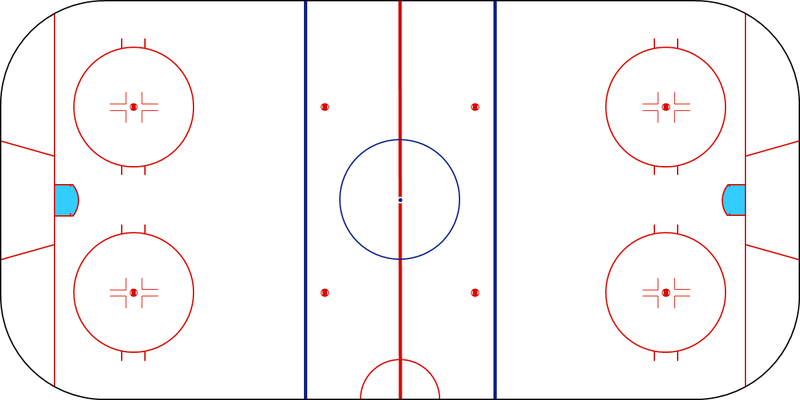

Each team is allowed a bench of between 20-23 players, with six players on the ice at one time. These usually consisit of a goaltender, two defenders and three attackers, however this line up can change depending on the current situation in the game. For example attacking players can be swapped for extra defenders if a teams winning or vice versa if the team is losing and in some situations the goaltender can be removed all together to allow for an extra "out field" player. The only time this isn't the case is when a team is killing a penalty, they will then be down by either one or two players depending on how many penalties are being sat. At all points players are allowed to be subbed on and off as long as a team has no more than five active out field player.
Games are split into three 20 minute periods. The clock will keep running at all times unless there is either a penalty, a goal, the puck leaves the field of play or the goaltender freezes the puck, which is when they either catch the puck in their glove, to their body or apply controlled downward pressure when it is under their leg pads. When one of these happens play is restarted with a faceoff in the designated zone. If after the 60 minutes there is a tied game, there is then a five minute 3-Vs-3 (three out field players and the goaltender) sudden death period. If the score is still tied then there is a penalty shootout. The only exception to this rule is in the Stanley Cup where there are no shootouts, the game keeps going till there is a winning goal.
An average hockey rink is 60 metres long endboard to endboard and 30 metres wide and is divided into three zone, an offensive/ defensive zone for each team as well as a neutral zone in the center. These zone divisions are represented by thick blue lines on the ice. Each offensive zone 22.86 metres which includes a 4 metres area behind each goal, whilst the neutral zone is 14.28 meters. There is also a thick red line 30 metres from each backboard to show the halfway line. There are also nine faceoff dots/ areas on the rink, two in each offensive area sat 8.4 meters from the back board and 13.4 meteres apart and five in the neutral zone, two from each blue line and one in the center of the rink where the game restarts after goals and to start periods.
Please See Diagram Below For Further Clarification
In Ice Hockey there are several different types of penalties that teams can commit resulting in different levels of punishment. The five main types of penalties are: Game Stop, Minor, Major, Misconduct and Game. Apart from Game Stop penalties, all penalties will result in the offending player or players having to sit in the penalty box for the duration of the penalty causing their team to be shorthanded and be on what is called the "Penalty Kill" or PK whilst their opponents are on a "Power Play" or PP. The only exception to these rules is if a goaltender is penalised, then a player who was on the ice at the time must it sit for them.
Game Stop penalties are extremly minor infractions in the game where no player is required to sit out and the only punishment is a faceoff.
Minor Penalties are the least severe penalties. They are minor or accidental infractions. They usually result in the offending player in the box for two minutes however some minors can be doubled if multiple offensive happen at the same time or if the offence if deemed worthy of a "Double Minor".